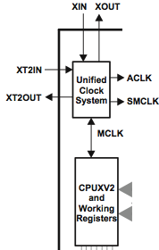
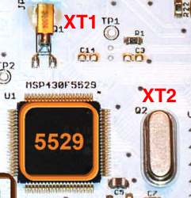
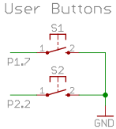
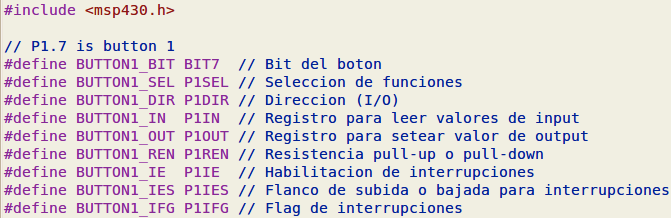
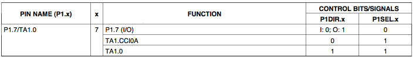
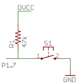
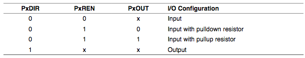
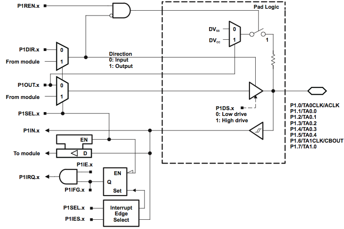
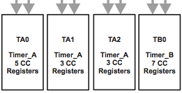

IIC2344 - Clase II
Arquitectura del microcontrolador msp430f5529
José Luis Honorato L.
jlhonora@ing.puc.cl
Overview
- msp430f5529 es el microcontrolador de la placa msp-exp430f5529
- Fabricante: Texas Instruments
- Microcontrolador RISC 16 bits
- 80 pines, 128 KB flash, 8 KB SRAM (+2KB USB RAM)
UCS: Unified Clock System
- Módulo de control de los clocks:

UCS: Unified Clock System
- Fuentes de clock externas:
- XT1 (LFXT1): Osciladores de baja frecuencia (32768 Hz) o alta frecuencia (4-32 MHz)
- XT2: Alta frecuencia (4-32 MHz)

UCS: Unified Clock System
- Fuentes de clock internas:
- DCO: Oscilador interno de diversas frecuencias (1 - 25 MHz)
- VLO: Oscilador interno de bajo consumo y frecuencia (10 kHz)
- REFO: Oscilador para referencias de calibración y otros (32768 Hz)
UCS: Unified Clock System
- Clocks internos:
- MCLK: Master clock, alimenta la CPU
- SMCLK: Sub-Master clock, periféricos como UART
- ACLK: Clock auxiliar, propósito general
- En estado inicial la CPU queda alimentada por DCOCLKDIV = DCO/2 = 1048576 Hz, al igual que los periféricos
Low Power Modes (LPM)
- Modos de bajo consumo, principal característica de los MSP430
- Dos metodologías para bajar consumo: Apagar partes de la CPU y periféricos, o bajar la frecuencia del clock
- Para este microcontrolador existen varios modos
- LPM0: CPU y MCLK apagado
- LPM1: CPU, MCLK y FLL apagado
- LPM2: CPU, MCLK, FLL y DCOCLK apagado
- LPM3: CPU, MCLK, FLL y DCO apagado
- LPM4: CPU, MCLK, FLL, DCO, ACLK y cristales apagados
- LPM4.5: Igual al anterior, aunque no hay retención de datos
- Flujo de firmware: procesar datos, luego LPM hasta que ocurra interrupción
Interrupciones
3 tipos de interrupciones:
- System reset
- NMI (non-maskable interrupts)
- Maskable interrupts
Interrupciones
Maskable interrupts:
- Interrupciones de periféricos
- Debe estar habilitado el pin GIE (Global Interrupt Enable)
- Latencia de 6 ciclos al ocurrir una interrupción:
- La instrucción actual se completa
- El Program Counter (siguiente instrucción) se devuelve al stack
- Se guarda el Status Register actual
- Se selecciona la interrupción con más prioridad
- El flag de interrupción se resetea
- Todos los bits del SR se borran excepto el que controla los LPM, se deshabilita el resto de las interrupciones
- El contenido del vector de interrupción se carga en el PC, ejecutando el código de la interrupción
Interrupciones
- Para volver al código anterior a la interrupción ocurren lo siguiente:
- El SR anterior vuelve al stack (GIE, LPM, etc)
- El PC anterior se saca del stack y sigue la ejecución normal del programa
Interrupciones
- Muy importante:
- La ISR (Interrupt Service Routine), que es el código que se ejecuta durante una instrucción, debe ser lo más corta posible
- El stack de instrucciones utiliza la RAM, por lo que hay cuidar la cantidad de variables, el tamaño de los arreglos y el número de llamado de funciones (recursividad, por ejemplo)
Interrupciones I/O
- Ejecutar código cuando se presione un botón (P1.7)

- Sólo puertos 1 y 2 tienen interrupciones para inputs
- Se debe elegir un flanco para la interrupción: subida o bajada
Interrupciones I/O
Definiciones de puertos

Muy buena práctica para claridad de código
Interrupciones I/O
Selección de funciones para un mismo pin

Interrupciones I/O
- Qué es un pull-up o pull-down? Ejemplo pull-up:

- Permite estabilizar la lectura e interrupciones
- Configuración en MSP430

Interrupciones I/O
Diagrama de 1 pin (cualquiera) del puerto 1

Timers
- Módulos de conteo asíncrono, cuenta hasta cierto valor luego interrumpe. Ej: prender un LED cada 1 segundo sin polling.
- En MSP430 son de 16 bits.
- Soportan modos PWM (tren de pulsos) y Capture/Compare (para registrar intervalos basados en un evento forzado, e.g. levante de un pin externo).

Timers especiales
- WatchDog Timer (WDT): Diseñado para resetear el sistema en caso de que el firmware no responda. Seteado por default, es necesario desactivarlo o procesarlo correctamente para un correcto funcionamiento del firmware.
- Real-Time Clock (RTC): Permite contar con mucha precisión segundos, minutos, etc. hasta siglos. En general, de muy bajo consumo. Necesitan de un clock de baja frecuencia y alta precisión (XT1)
Cómo la hacemos funcionar?
- Programamos el firmware
- Compilamos con MSPGCC (gcc)
- Instalamos con MSPDEBUG (gdb)